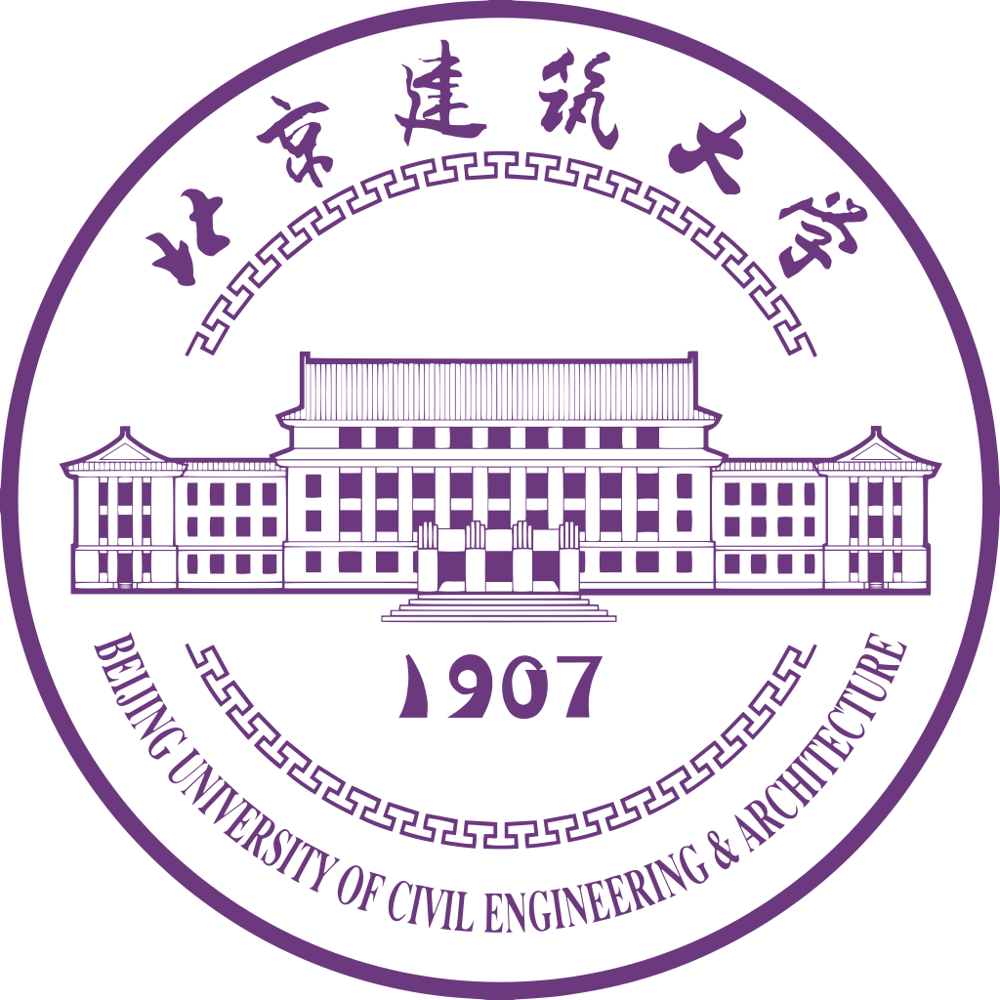

香屯故事 ·
六百年长城守望
Six Centuries of Guarding the Great Wall
延庆、昌平、怀柔三区交界处，四面环山、一水中流。38户74口人的香屯村背靠大庄科段明长城，村东峡谷可通怀柔水长城景区。这里的历史，从辽代铁炉的第一缕炉火写起，经明代昌镇黄花路的青砖叠砌，穿越抗日烽火与和平建设，延续至2025年首届长城国潮文化季的万余游客涌入。
Chronicle
时间的年轮
A Chronicle Carved in Stone
铁火初燃
有"辽代首钢"之称的采矿地。香屯一带的铁矿开采可追溯至辽代（916-1125年），这里是北京地区最早的冶铁遗址之一。千年前的炉火映红山谷，为这片四面环山的土地写下第一行文明的注脚——传承红的底色，便从这里开始。
铁火初燃
有"辽代首钢"之称的采矿地。香屯一带的铁矿开采可追溯至辽代（916-1125年），这里是北京地区最早的冶铁遗址之一。千年前的炉火映红山谷，为这片四面环山的土地写下第一行文明的注脚——传承红的底色，便从这里开始。
长城筑守
昌镇黄花路西老星口段长城修筑。3号、4号敌台与2号至5号敌台间约400米墙体拔地而起，严密的军事防御体系控扼着延庆通往昌平、怀柔的山间通道。守边将士在城砖上刻下"老虎吃猪""五子棋"等棋盘，留下闲暇时光的生动印记。
长城筑守
昌镇黄花路西老星口段长城修筑。3号、4号敌台与2号至5号敌台间约400米墙体拔地而起，严密的军事防御体系控扼着延庆通往昌平、怀柔的山间通道。守边将士在城砖上刻下"老虎吃猪""五子棋"等棋盘，留下闲暇时光的生动印记。
村落成形
长城军事功能渐退，守边军户转为农耕。板栗树漫山遍野扎根，杏林沿溪谷蔓延。四面环山、一水中流的格局藏风聚气，香屯村落在青山环抱中悄然定型——一个自给自足的山村，开始书写它的板栗金岁月。
村落成形
长城军事功能渐退，守边军户转为农耕。板栗树漫山遍野扎根，杏林沿溪谷蔓延。四面环山、一水中流的格局藏风聚气，香屯村落在青山环抱中悄然定型——一个自给自足的山村，开始书写它的板栗金岁月。
烽火前沿
香屯村成为抵抗日寇的前沿阵地，约5公里外便是沙塘沟"平北红色第一村"。长城从文化遗产化身为民族精神的堡垒，村民以血肉之躯在城墙之后筑起第二道防线。那些嵌入砖石的弹痕，至今无声诉说着不屈的记忆。
烽火前沿
香屯村成为抵抗日寇的前沿阵地，约5公里外便是沙塘沟"平北红色第一村"。长城从文化遗产化身为民族精神的堡垒，村民以血肉之躯在城墙之后筑起第二道防线。那些嵌入砖石的弹痕，至今无声诉说着不屈的记忆。
最美乡村
获评"北京市最美村庄"。95%的林木覆盖率冠绝延庆，古朴的石墙民居与悠远的长城剪影，让香屯成为延庆区最早开展民俗旅游的村庄之一。远山绿的名片，由此被外界认识。
最美乡村
获评"北京市最美村庄"。95%的林木覆盖率冠绝延庆，古朴的石墙民居与悠远的长城剪影，让香屯成为延庆区最早开展民俗旅游的村庄之一。远山绿的名片，由此被外界认识。
研究性修缮
国家文物局首批批复明长城大庄科段研究性修缮试点，标志着中国长城保护从"抢救修复"全面转向"研究+保护+预防"。香港黄廷方基金会捐赠1000万元，修缮3号、4号敌台及约400米墙体。考古先行、最小干预、多学科协同、全过程数字化——在这一过程中，消失380多年的历史地名"西星口"从古籍中被重新唤醒。
研究性修缮
国家文物局首批批复明长城大庄科段研究性修缮试点，标志着中国长城保护从"抢救修复"全面转向"研究+保护+预防"。香港黄廷方基金会捐赠1000万元，修缮3号、4号敌台及约400米墙体。考古先行、最小干预、多学科协同、全过程数字化——在这一过程中，消失380多年的历史地名"西星口"从古籍中被重新唤醒。
陈列室开馆
120平米的香屯村乡情村史陈列室开馆，驻村第一书记范学新——从事文物保护和地方历史文化研究30余年的延庆区文物局研究馆员——亲自策展。延庆融媒体《洞见长城》全程直播，在线观众超2000人次。从辽代冶铁到考古出土的明代杏核，村庄千年的记忆终于有了一个永久的居所。
陈列室开馆
120平米的香屯村乡情村史陈列室开馆，驻村第一书记范学新——从事文物保护和地方历史文化研究30余年的延庆区文物局研究馆员——亲自策展。延庆融媒体《洞见长城》全程直播，在线观众超2000人次。从辽代冶铁到考古出土的明代杏核，村庄千年的记忆终于有了一个永久的居所。
文旅新生
4月，北京龙吟溪谷文旅发展有限公司入驻，投入430余万元，规划1000多亩文旅项目。长城书院、长城剧场、研学基地、西星口营地、校场——三条路线（红色研学、绿色生态、灰色长城）同步铺开。首届长城国潮文化季成功举办，40名大学生志愿者参与，试运营接待游客1.5万余人次，实收65万元。
文旅新生
4月，北京龙吟溪谷文旅发展有限公司入驻，投入430余万元，规划1000多亩文旅项目。长城书院、长城剧场、研学基地、西星口营地、校场——三条路线（红色研学、绿色生态、灰色长城）同步铺开。首届长城国潮文化季成功举办，40名大学生志愿者参与，试运营接待游客1.5万余人次，实收65万元。
长城书院
计划完成"长城书院"建设，推动"京畿长城风景道"香屯段落地。2026年3月1日《北京市长城保护条例》正式实施，第二十七条明确推动具备条件的长城点段辟为参观游览区——香屯的研究性修缮段，有望成为延庆首批开放的长城体验区。
长城书院
计划完成"长城书院"建设，推动"京畿长城风景道"香屯段落地。2026年3月1日《北京市长城保护条例》正式实施，第二十七条明确推动具备条件的长城点段辟为参观游览区——香屯的研究性修缮段，有望成为延庆首批开放的长城体验区。
Gene Code
四色 · 一方水土的基因密码
The Genetic Code of a Homeland
传承红
Heritage Red #851217
"辽代炉火映红山谷，抗日烽烟烧过城墙。从'辽代首钢'的冶铁遗址到沙塘沟'平北红色第一村'，这抹红是千年不熄的炉火，是世代相传的守护者血脉。"
板栗金
Chestnut Gold #593D00
"百年板栗林漫山而下，秋风起时满坡金黄。3号敌台旁出土的明代杏核跨越六百年的沉睡——村民胡淑琴以古法熬制的杏皮茶，便是这条时间线上最新鲜的注脚。"
远山绿
Mountain Green #3B6934
"95%的林木覆盖率冠绝延庆全区，龙吟溪谷的水声从长城脚下蜿蜒而出。四面环山、一水中流，村东峡谷可直通怀柔水长城——藏风聚气的格局，让呼吸之间尽是山野清香。"
玄石墨
Stone Ink #1B1C1C
"取自2号至5号敌台间400米墙体的沉稳色泽。每一道裂痕都是时间的书法，每一块城砖都有三维数字档案——这是长城的本色，也是香屯的底色。"
Village Today
38户人家的守望
A Vigil Kept by Thirty-Eight Households
38
户 / 74 人
Registered Households
25
常住户 / 43 人
Permanent Residents
10余
60岁以下人口
Under 60 Years Old
38户人家、74口人，60岁以下仅10余人——这座曾经的"北京最美村庄"一度面临老龄化的沉寂。但2025年龙吟溪谷文旅公司入驻、430余万元投入、1.5万游客涌入，古老的守望正在迎来新生的回响。正如习近平总书记回信所言："把祖先留下的这份珍贵财富世世代代传下去。"
Academic Partners
学术力量 · 共建长城文化
Academia Joining Hands for Heritage
北京师范大学
马克思主义学院 — 课题《回应总书记之嘱托》

北京建筑大学
驻村创作长城主题墙画 — 建筑遗产数字化记录
北京邮电大学
创业实践 — 数字技术赋能长城文旅
对外经济贸易大学
"一村一品" — 香屯品牌策划与文旅推广
首都师范大学
首都师范大学参赛团队 — 40名大学生志愿者参与国潮文化季